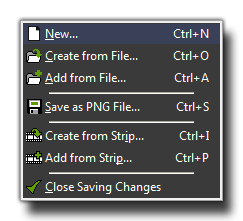
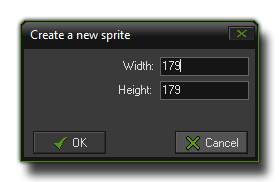
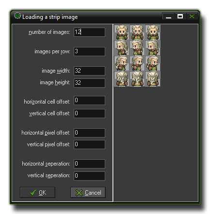

The Sprite Editor File Menu
This section explains the file menu functions
associated with the GameMaker: Studio sprite editor.
 The file menu contains
a number of commands related to loading and saving sprites, which
are all explained below:
- New: This will create a new, empty sprite with the
dimensions you specify in the following window:  The width and height that you input here will
be the base size for all sub-images of your sprite.
- Create from File: You can use this option to select a
file and use that to create a new sprite. Many file types can be
used, including bmp, png, jpeg and gif, and they will all generally
create a sprite consisting of a single sub-image, except for
animated GIF files that are split into the sub-images. If you use a
strip and the name of the file ends with _stripXX then
GameMaker: Studio will also split this sprite up into its
component sub-images. For more details on the various load options
see Defining
Sprites
- Add from File: Adds an image (or multiple images) from
the selected file to the current sprite. If the images do not have
the same size you can choose where to place them or to stretch them
from the window that pops up. You can also select multiple images
from the file manager and they will all be loaded into the sprite
as separate sub-images.
- Save as PNG File: This will save the sprite as a strip
in a *.png format file. A name is automatically generated from the
name of the sprite in the resource tree, and when the sprite has
multiple sub-images the text _stripXX (with
XXbeing the number of sub-images) is automatically
appended. Of course you can name the image file whatever you wish,
but if you want GameMaker: Studio to be able to load it at a
later date and maintain the sub-images, then you should maintain
the _stripXX format at the end.
- Create from Strip: This option permits you to load a
non-standard (ie: the name does not have _stripXX at the
end) image file into GameMaker: Studio as a strip of
sub-images. The following window will open where you can set how
this is to be achieved: 
GameMaker: Studio has a number of options to help you adjust
the spacing of the sub-images within the sprite strip to get the
optimum results. These options are:
Number of images: This is the total
number of sub-images that the sprite contains.
Images per row: Here we specify the number of sub-images
that are in each row of the image file.
Image width and image height: The width and height (in
pixels) of each sub-image.
Horizontal and vertical cell offset: A "cell" here is one
space the size of the above mentioned width and height, so setting
this will offset the starting point of the sub-images.
Horizontal and vertical pixel offset: As above, but this
time the starting coordinates are defined in pixels rather than
cells.
Horizontal and vertical separation: Sometimes a sprite strip
has spaces ("buffer" zones) around each of the individual
sub-images. these zones can be eliminated by this
setting.
- Add from Strip: Use this to add sub-images to the
current sprite from an external file where they are in a strip
format. See above for the window that this opens.
- Close Saving Changes: Closes the form, saving the
changes made to the sprite. If you don't want to save the changes,
click on the close button of the form.
© Copyright YoYo Games Ltd. 2018 All Rights Reserved